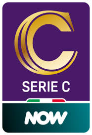

La Serie C

Il campionato di Serie C, colloquialmente abbreviato in Serie C e ufficialmente denominato Serie C Now per ragioni di sponsorizzazione, è la terza serie professionistica del campionato italiano di calcio maschile, la più bassa a carattere professionistico.
Dal 2014 è l'unico campionato organizzato dalla Lega Italiana Calcio Professionistico, dopo l'unificazione tra Prima e Seconda Divisione in una divisione unica denominata Lega Pro fino al 2017, che ha ripristinato il formato esistente fra il 1935 e il 1978 (anno in cui la C si scisse nelle Serie C1 e C2).
Il 25 maggio 2017 l'assemblea di Lega Pro ha approvato all'unanimità il ritorno alla denominazione originaria, in quanto è stato ritenuto il nome originario quello più rappresentativo per tifosi e appassionati.
(wikipedia)
Il girone
Girone A